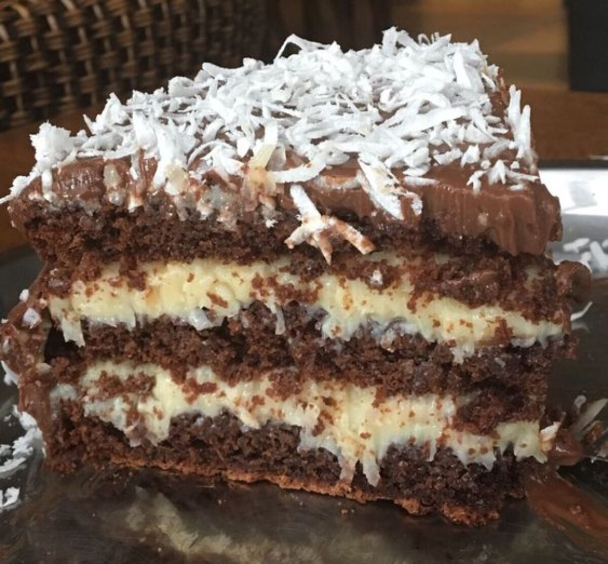

Ingredientes para a massa:
Modo de preparo:
Bata os líquidos no liquidificador. Em uma tigela, misture o açúcar, a farinha e o chocolate. Despeje a mistura líquida e mexa bem. Por último, adicione 1 colher (sopa) de fermento.
Asse em uma forma untada a 180°C por cerca de 35-40 minutos.
Ingredientes para o recheio:
Modo de preparo:
Leve tudo ao fogo médio, mexendo sempre, até que desgrude levemente do fundo da panela (ponto de recheio cremoso). Deixe esfriar.
Cobertura (Ganache)
Ingredientes:
Montagem:
Dica:Envolva o bolo em papel alumínio e deixe na geladeira por pelo menos 4 horas antes de servir. Ele fica muito melhor gelado!